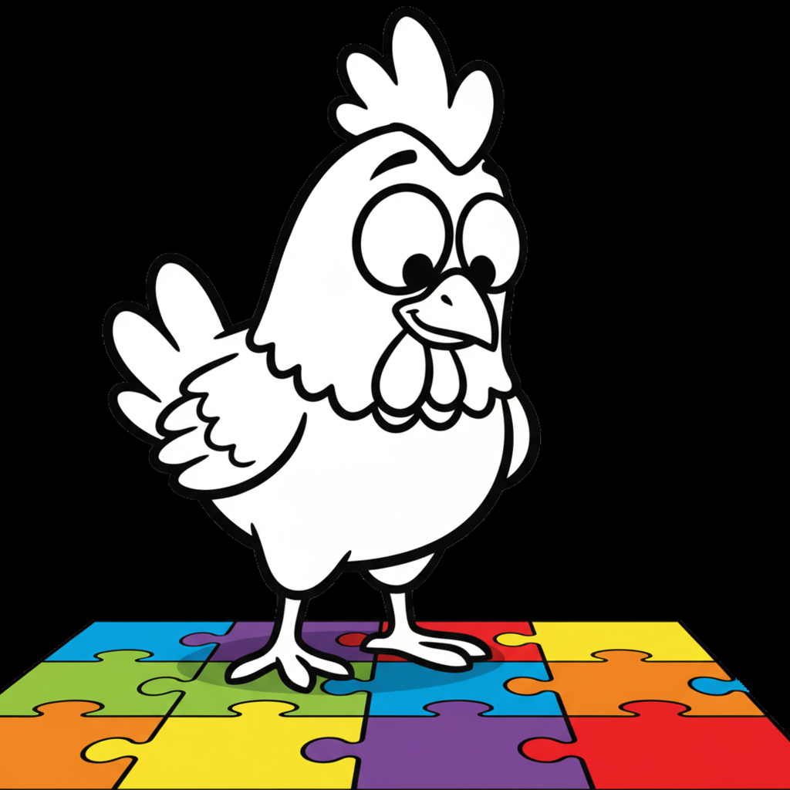

鶏を近距離で観察した際、その鋭く小刻みに動く瞳孔や、左右別々に動く眼球に対して「彼らには一体どのように世界が見えているのか」という疑問を抱く人は少なくない。かつて「鳥頭」という言葉に代表されるように、鳥類の感覚機能は単純化して捉えられる傾向にあったが、近年の比較生理学および網膜組織学の研究は、その常識を完全に覆している。鶏の視覚システムは、感光波長帯域、網膜上における光受容体の三次元的モザイク配置、動体分解能、さらには非視覚的光受容機構に至るまで、人間を含む主要な哺乳類の視覚器官を大幅に凌駕する高度な構造を獲得している。本稿では、解剖学的根拠と数々の学術研究データに基づき、鶏の持つ網膜構造、4色型色覚、紫外線受容の生態学的意味、300度に及ぶ視野構造、動体分解能、そして産業応用技術に至るまでを体系的に網羅し、詳説する。
人間の網膜構造と鶏の網膜構造の決定的な違いは、錐体細胞の多様性と組織学的配置にある。人間の網膜には、赤（L）、緑（M）、青（S）の波長に反応する3種類の単一錐体しか存在せず、いわゆる3色型色覚（Trichromacy）によって色彩を構築している。これに対し、鶏（Gallus gallus domesticus）の網膜には、紫外線から近青色領域（ピーク波長約360〜415nm）を感知する「VS/UVS（Violet-Sensitive / Ultraviolet-Sensitive）錐体」が加わり、計4種類の単一錐体が機能する「4色型色覚（Tetrachromacy）」を有している[1]。
さらに注目すべきは、鶏の網膜にはこれら4種類の単一錐体（Single Cones）に加えて、「複重錐体（Double Cones）」と呼ばれる特殊な対型の受容体が存在することである。複重錐体は、主錐体（Principal cone）と副錐体（Accessory cone）が物理的に結合した構造をしており、視認領域の色判別ではなく、輝度線度の検出や動体情報の処理、さらには偏光の感知に関わっていると考えられている[2]。
鶏の網膜錐体内部の外節と内節の境界には、カロテノイド色素が高濃度で凝縮された脂質小胞、すなわち「油滴（Oil Droplets）」が存在する。光が視物質（オプシン蛋白）に到達する前にこの油滴を透過することにより、短波長側の光線がシャープにカットされる。この光学フィルター効果によって各錐体の分光感度スペクトルの重なり（透過波長の重複）が激減し、波長識別能力が劇的に高められている[1][4]。
鶏の網膜上におけるこれら光受容体の分布は、無秩序な混在ではなく、「自己組織化モザイクパターン（Self-organizing Mosaics）」と呼ばれる極めて厳密な幾何学的格子を形成している。5種類の錐体（4種の単一錐体＋複重錐体）それぞれが独立した均一な分布パターンを描きつつ、網膜全体で重なり合うことなく隙間なく配置されることで、視野のどの領域においても均一な色覚解像度と動体解像度を維持している[2]。

このように、油滴による光学ろ過と4色型受容体のモザイク配置が組み合わさることで、鶏は波長わずか数ナノメートルの違いをも鮮明に色別可能な視野を獲得しているのである。
人間にとって紫外線（UV）は「目に見えない有害な光」に過ぎないが、鶏にとっては外界の情報量を決定づける重要な視覚チャンネルである。鶏が感知する紫外線領域は主にUVA波長帯（315〜400nm）であり、この波長情報が日常の多様な生態行動に不可欠なシグナルとして機能している。
第一に、「採餌行動（Foraging）」における役割である。野生の原種である赤色野鶏（Gallus gallus）の生息環境において、昆虫の外骨格（キチン質）や植物の果実・種子、若芽の表面ワックス層は、UVAを独特のパターンで反射または吸収する。人間に単なる草むらに見える領域であっても、鶏の眼には栄養価の高い餌が浮き上がる「高コントラスト領域」として視認されているとされる[3]。
第二に、「社会的コミュニケーションおよび繁殖行動」における役割である。鶏の羽毛構造、特に首元や腰部の羽毛（ケープやサドル）は、特定の波長の紫外線を高度に反射する構造色（Structural Color）を有している。人間には同じ褐色の羽毛に見えても、鶏同士からはUVAの反射強度によって個体の栄養状態、内分泌状態（テストステロン濃度等）、遺伝的適応度が明確なシグナルとして視認されている[6]。
研究グループによる行動実験において、UVAを含んだ自然光環境下と、UVAをカットした特殊照明環境下で、雌鶏が雄鶏を選択する行動軌跡を解析した。その結果、UVAカット環境下では雌のつがい選択行動に迷いが生じ、選択までの時間が著しく遅延したのに対し、UVA存在下では最もUVA反射強度の高い健康な雄の元へ速やかに接近することが確認された[6]。
さらに、雛（ひな）における母親の認識や、集団内での社会順位（ペッキングオーダー）の維持においても、頭部や角質（嘴や脚）の紫外線反射パターンが視覚的個体識別票として利用されていることが判明している。
鶏の眼球は頭部の側面に位置しており、その解剖学的配置によって広大な視野角を実現している。各単眼の視野角は約170度に達し、両眼を合わせた全視野角は約300度に及ぶ。背後の一部を除いて、周囲のほぼすべての領域を頭部を動かすことなく監視することが可能である[5]。
しかし、この超広視野構造は「両眼視（Binocular Vision）」領域の縮小というトレードオフを伴う。鶏の両眼視野角は前方わずか20〜30度程度に限定されており、人間（約120度の両眼視野）のように両眼の視差（ステレオopsis）を利用して広範囲の立体感や奥行きを把握することは苦手である。
この立体視の制限を補うために進化させたのが、鶏特有の「頭部固定運動（Head Bobbing）」である。鶏が歩行する際、胴体が前進しているにもかかわらず、頭部が一瞬空中に完全に静止するような運動を行う。この動きは解剖学的に2つのフェーズに分かれる。
さらに、鶏の左右の眼は脳の左右半球と交差接続されており、明確な側方化（機能の左右差）が存在する。一般的に、右眼（左脳処理）は足元の小さな種子や餌の細部を見分ける「近接・精密作業」に優れ、左眼（右脳処理）は上空からの天敵（タカやタカ目鳥類）の接近をいち早く察知する「遠景・警戒」に特化している[5]。
鶏の視覚システムを語る上で欠かせないもう一つの要素が、圧倒的な時間分解能（Time Resolution）である。視覚系が点滅する光を不連続な画像として解像できる限界の速度を「フリッカー融合臨界周波数（Critical Flicker Fusion Frequency; CFF）」と呼ぶ。
人間のCFFは通常約40〜60Hz（1秒間に40〜60回の点滅で連続した光に見える）とされるのに対し、鶏のCFFは明るい環境下において**70〜95Hz**、個体や光強度によっては**100Hz以上**に達することが生理学的に証明されている。
| 評価指標 | 🧑 人間（Homo sapiens） | 🐔 鶏（Gallus gallus domesticus） |
|---|---|---|
| 単一錐体（色彩認識） | 3種類（赤・緑・青） | 4種類（赤・緑・青・紫外線/UVA） |
| 複重錐体（動体・輝度） | なし | あり（解剖学的に分化） |
| 網膜内油滴フィルター | なし | あり（無色・黄色・赤色・無色高屈折等） |
| 全視野角 / 両眼視野角 | 約180° / 約120° | 約300° / 約20〜30° |
| フリッカー融合周波数（CFF） | 40 〜 60 Hz | 70 〜 95 Hz（最大100Hz超） |
| 非視覚的光受容（松果体等） | きわめて極小（皮膚・眼球メイン） | 頭蓋透過光による松果体・深部脳受容体が直結 |
この極めて高いCFFは、自然界において高速で飛来する捕食者の影や、草むらを素早く逃げ惑う小さな昆虫の動きを、あたかも「ハイスピードカメラのスローモーション映像」のようにコマ送りで高精細に捕捉することを可能にしている。しかし、この高分解能は、人間が作り出した人工的な住環境においては予想外のストレス要因となる。
例えば、従来の商用電源（50Hz/60Hzの交流電源）で駆動するインバーター未搭載の蛍光灯や低品質なLED照明は、人間には定常光に見えても、鶏にとっては「激しく明滅を繰り返すストロボライト」として認識される。これが恒常的な中枢神経系のストレスとなり、羽つつき（Feather Pecking）や共食い（Cannibalism）といった異常行動を引き起こす直接的なインフラ的原因となっていることが実証されている。

近年の畜産科学（Animal Science）およびアニマルウェルフェアの分野では、鶏の高度な視覚スペクトルに最適化させた「スペクトル制御照明（Spectral Lighting）」の導入が急速に進んでいる。
従来の白熱電球や一般的な白色LEDは、人間の比視感度（555nm付近の緑〜黄色光）に合わせて設計されているため、鶏にとってはUVA領域および青色短波長領域が著しく欠落した「色彩の欠損した不自然な暗がり」として感じられていた。これに対し、UVA（380nm付近）を含有する特殊フルスペクトルLEDを採卵鶏（レイヤー）や肉用鶏（ブロイラー）の飼育施設に導入した臨床試験データでは、以下のような著しい改善結果が報告されている[7][8]。
また、鶏の光受容は眼球（網膜）だけにとどまらない。鶏の薄い頭蓋骨を透過した光は、脳深部の視床下部や松果体に存在する「松果体外視覚受容体（Extra-retinal Photoreceptors）」に直接届く。特に長波長の赤色光は頭骨透過性が高いため、視床下部を直接刺激して性ホルモンの分泌（Gonadotropin-releasing hormone; GnRH）を促し、産卵リズムを制御する強力な因子となっている。
哺乳類の多く（例えば人間や犬、猫）が目を開け、視覚的解像度を完成させるまでに数週間から数か月を要するのに対し、早成性鳥類（Precocial birds）である鶏の視覚発達スピードは異次元とも言える速さを見せる。
孵卵器から孵化した直後のヒナ（1日齢）は、すでに基本的な色覚と空間認識を有しているが、生後わずか**24〜48時間以内**に、錐体細胞内の油滴の密度や視物質の充填が完了し、成鶏と同等水準の視覚鋭敏度に到達する[3]。この超高速発達は、孵化直後から自力で歩行し、天敵の影を感知しながら地面の微細な食料を選択して摂取しなければ生き残れないという、過酷な自然淘汰が生み出した進化の産物である。
さらに、鶏の眼球内および網膜内には独自の「自律型サーカディアン時計（Retinal Circadian Clock）」が存在する。網膜自身がメラトニンやドパミンを局所的に分泌し、明期にはドパミン合成を高めて視覚感度とCFFを最大化し、暗期にはメラトニン分泌を高めて光感度を高めることで、昼夜の環境変化に自律的に網膜生理を適応させているのである。
| 色覚構造の特長 | UV感知を含む4色型単一錐体と複重錐体、さらに「油滴フィルター」の組み合わせによる超高精度色識別。 |
| 視野と動体視力 | 300度の広視野角、頭部固定運動による像安定化、および90Hzを超える高いフリッカー融合分解能。 |
| 生態的・産業的意義 | 紫外線による食物・配偶者識別。最新の養鶏現場ではUVA波長別ライティングによるウェルフェア向上に応用。 |